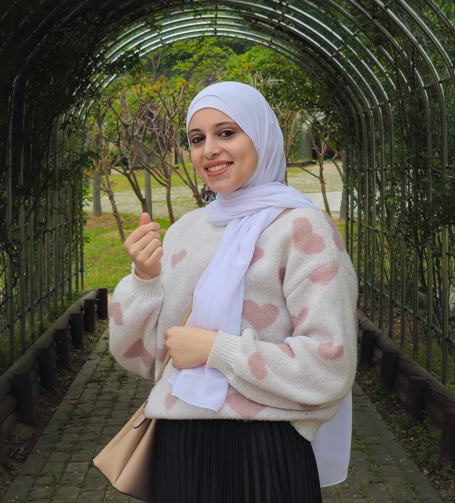

Nada Elnagar
Integrated M.S./Ph.D. Student
Gwangju Institute of Science and Technology (GIST)
Department of Biomedical Science and Engineering
Research Interests
- Neuropathic pain
- Neurodegenerative diseases
- Molecular mechanisms of neural signaling
- Pain-related proteins and receptors
- Therapeutic strategies for neurological disorders
- Neurophotonics
Education
- B.Sc. in Biochemistry, Faculty of Science, Port Said University, Egypt
- Professional Diploma in Clinical Biochemistry